Transcription intégrale structurée du support et de ses instructions. La mise en forme est adaptée au Web ; les compléments pédagogiques restent dans leur onglet distinct.
TP du Module 06 – Gestion des paquets logiciels
Avant de démarrer ce TP, il convient d’avoir suivi les vidéos des modules 1 à 6 et d’avoir réalisé les TP proposés.
Durée estimée
30 à 45 mn
Afficher le composant les "Software & Updates"
Rechercher le composant dans le menu Gnome
Onglet Debian Software, configuration du dépot principal Main. Possibilité de cocher contrib et non-free
Onglet Updates, presence de bullseye-security et bullseye-updates
Décocher les cases au besoin pour désactiver les dépots cdrom.
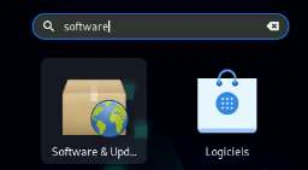
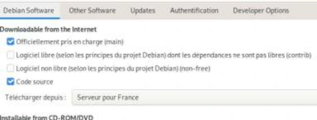
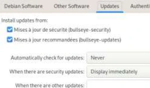
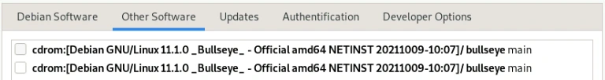
Vérifier la configuration du fichier sources.list dans /etc/apt :
Les lignes commençant par "deb " indiquent les dépôts de binaires Les lignes contenant “bookworm-updates” indiquent les dépôts de mises à jour Les lignes commençant par “deb-src ” indiquent la disponibilité des paquets sources
Faire une élévation de droit en tant que root et lancer l'édition du fichier
→ Pour modifier toutes les lignes visées en une fois, les options de substitution de VI sont à privilégier
:g/^deb-src/s/^/# Recherche des lignes commençant par deb-src, puis substitution du caractère début de ligne ^ par #
Effectuer une mise à jour des paquets installés avec apt :
Lancer la mise à jour de la base données locales des paquets avec
Très peu de paquets, voire aucun. Cela est du au mode d’installation net install qui a directement récupéré des paquets à jours
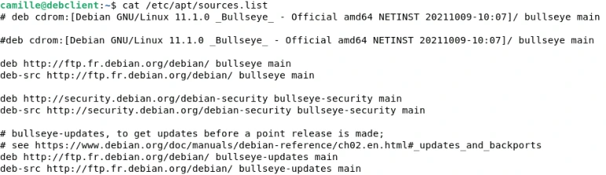
deb http://ftp.fr.debian.org/debian/ bullseye main
deb-src http://ftp.fr.debian.org/debian/ bullseye main
deb http://security.debian.org/debian-security bullseye-security main
deb-src http://security.debian.org/debian-security bullseye-security main
deb http://ftp.fr.debian.org/debian/ bullseye-updates main
deb-src http://ftp.fr.debian.org/debian/ bullseye-updates main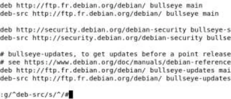
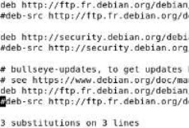
Transcription de la capture : noms du réseau de formation neutralisés, paramètres numériques et suite conservés.
Atteint :1 http://depot.formation.example:8081/repository/debian bullseye InRelease
Atteint :2 http://depot.formation.example:8081/repository/debian bullseye-updates InRelease
Atteint :3 http://depot.formation.example:8081/repository/debian-security/debian-security bullseye-security InRelease
Lecture des listes de paquets... Fait
Construction de l'arbre des dépendances... Fait
Lecture des informations d'état... Fait
Tous les paquets sont à jour.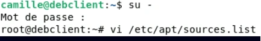
su -
vi /etc/apt/sources.listInstaller le logiciel suivant avec l'outil "Logiciels"
→ → Rechercher Gparted et lancer son installation. Le mot de passe root est demandé pour valider l’élévation de droits
→ Gparted est bien présent dans les applications. Le logiciels se lance après demande d’une nouvelle élévation de privilèges.
Ne rien modifier et quitter le logiciel.
Installer les paquets suivants avec la commande apt :
Valider l'installation du paquet et de ses dépendances.
La recherche apt search ssh renvoie de très nombreux résultats.
On peut limiter les résultats en cherchant ssh-server A noter que le paquet nommé simplement ssh est un “métapaquet” qui installe openssh-server + openssh-client (si pas déjà present).
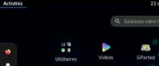
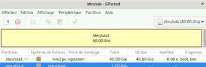
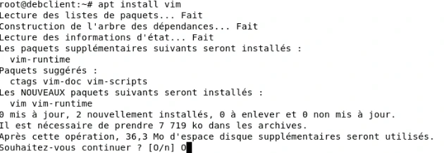
apt install vim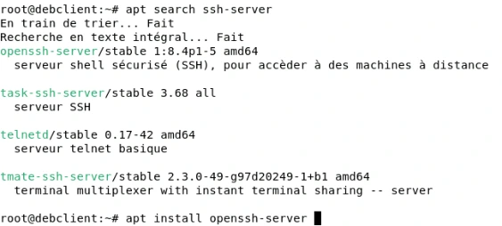
apt search ssh-server
apt install openssh-server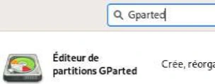
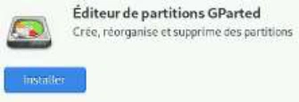
Terminator est un logiciel terminal pour client graphique Linux hautement configurable.
Afficher les informations sur ces 3 paquets avec les commandes :
→ apt show récupère de nombreuses informations : version, taille, dépendances… dpkg -L va lister les fichiers liés à ce paquet présents sur le système.
Connectez-vous via Putty sur votre VM Debian graphique.
Récupérer un client Putty sur Distrib ou bien à l’adresse https://the.earth.li/~sgtatham/putty/latest/w64/putty.exe
→ Lancer le logiciel, saisir l'adresse IP de la VM, et saisir login/password.
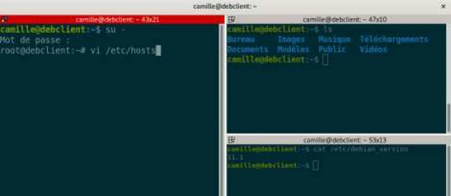
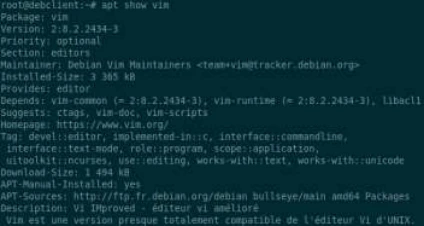
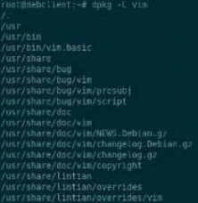
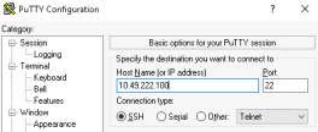
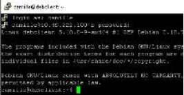
Configurer manuellement les dépôts Internet dans le fichier /etc/apt/sources.list
Les dépots Debian nécessaires Bulseye → Bookworm
Vérifier les mises à jour disponibles
Le nombre de mises à jour dépend de l'écart entre la date de génération du DVD utilisé pour l'installation du système et la date de lancement de la demande de mise à jour
Installer les paquets suivants avec la commande apt :
Il est possible de lancer l'installation des deux paquets en même temps avec apt
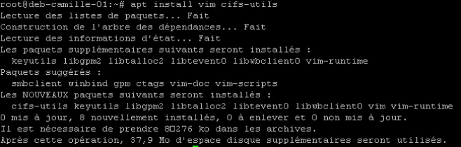
apt install vim cifs-utils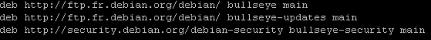
deb http://ftp.fr.debian.org/debian/ bullseye main
deb http://ftp.fr.debian.org/debian/ bullseye-updates main
deb http://security.debian.org/debian-security bullseye-security main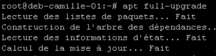
apt full-upgrade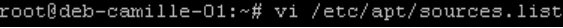
vi /etc/apt/sources.listConfigurer le fonctionnement de VIM pour les deux Postes:
Vérifier dans /usr/share/vim le nom du dossier suivant, il change selon les versions de Debian
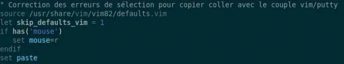
source /usr/share/vim/vim82/defaults.vim
let skip_defaults_vim = 1
if has('mouse')
set mouse=r
endif
set paste